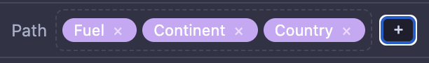

Interactive sample visualizations built with
gp-treemap.
Each entry below is a self-contained HTML file — bundle and dataset
are inlined, so they render from any URL (or file://)
with no server.
A treemap
displays a hierarchy as nested rectangles, each sized in proportion to
a numeric value so the whole distribution — and the relative weight of
every part — is visible at a glance. A hat tip to
GrandPerspective,
the classic macOS disk-usage viewer whose dense, label-free mosaic
inspired gp-treemap's visual style.
Features you'll find in every view below:
Breadcrumb bar along the top, showing the ancestor chain from
the root down to the currently clicked cell:
The
home icon on the far left is the tree root — click it to focus
the root, double-click to zoom back out all the way.
Each segment after the home is a clickable ancestor; single-click
focuses it (highlights its subtree), double-click zooms in so
that node becomes the new root.
A
magnifying glass marks the current zoom anchor — everything to
its right lives inside the zoomed-in subtree.
Mouse-wheel focusing: with a cell clicked, scroll the wheel
to walk focus up and down its ancestor chain — scroll down toward
the root (shallower), scroll up toward the clicked leaf (deeper).
It's the fastest way to see where a cell sits in the hierarchy.
Depth truncation via the −/+ depth stepper in the toolbar.
Capping the depth prunes levels below the budget and rolls their
contents up into the parent, which makes those parent cells big
enough to actually carry a readable label. Lift the cap back to
∞ to see every leaf. The budget re-applies from the
current zoom root, so you can drill in and still get a labelled,
uncluttered view at each level.
Plus the usual: hover for exact values, click to select, double-click
to zoom, and Size / Color / Path controls in the header of the
tabular views.
Trees from Tables
Several entries below use the path / tabular treemap
(gp-treemap-table), which builds the hierarchy on the fly
from a flat table of rows. The Path control in the header lists
the columns used to group the data, from outermost to innermost:

Drag the chips to reorder them and the nesting re-computes immediately:
with Fuel first (as above) you get one cell per fuel with
continents inside; drag Continent to the front instead
and the same rows re-tile as one cell per continent with fuels inside.
Same data, totally different story — and no re-export, just a drag.
Click the × on a chip to drop that column from the
hierarchy entirely, or the + to add another.
Examples
gp-treemap source tree — disk usage
The gp-treemap repository looking at itself — the working tree plus
.git and node_modules. Cells are sized by
bytes on disk and colored by file extension; hover for exact sizes,
click to select, scroll-wheel to focus an ancestor, double-click to
zoom. To scan any directory on your own machine and get a
self-contained HTML like this one:
Global electricity generation — path: fuel → continent → country
Ember's Yearly Electricity Data
(2023, TWh by country and fuel). Built with
tools/table-treemap.js from tabular JSONL: use the Size,
Color and Path controls in the header to re-group on the fly — drag the
Path chips to reorder the hierarchy. Colored by fuel, Catppuccin
Mocha theme.
Reproduce it from the pre-filtered JSONL in this repo:
California city wages 2024 — where do city payrolls go?
Every California city employee with reported wages in 2024 — about
334,000 rows from the state's
Government Compensation in California raw export, cell size =
TotalWages. Grouped by
department → county → city → position → _row, but
with depth = 1 at first so only the top-level
Department bucket is drawn — a cleaner first read of where the
money goes. Police and Fire dominate; Parks & Rec, Public
Works and Transportation come next. Click the + in the
component toolbar to reveal another level, or double-click any
cell to zoom in — the depth budget re-applies from the new root,
so you can drill in without losing your orientation.
Trivia: DepartmentOrSubdivision is a free-text field
with no normalization, so each spelling is a separate top-level
cell. Police alone shows up as Police,
Police Department, Police Services Agency,
Police Administration, and Police Field Services.
Fire is Fire, Fire Department,
Fire-Rescue, Fire Operations,
Fire Suppression, and
Fire Suppression & Rescue. Parks & Rec is
Recreation And Parks,
Recreation and Park Commission,
Parks and Recreation, Parks & Recreation,
and Parks & Recreation Administration. And
Airports and Airport Commission are two
different cells too.
California city wages 2024 — one cell per employee
Same file as above, but with the depth budget lifted so every one
of the 334k rows gets its own pixel-sliver cell inside its
position / city / county / department grouping. Cell size is the
employee's total wages, so the layout itself reveals pay
distribution: zoom into Police or a big city and you can see a
handful of disproportionately large cells (the top earners)
alongside a vast mosaic of small, similarly-sized cells (the bulk
of staff at comparable pay).
(See the intro above for the Police / Fire / Parks & Rec
spelling carnival.)
To reproduce this plot from scratch, grab the raw GCC zip and pipe
its CSV into gp-treemap-table:
Public-record compensation for every University of California
employee paid at least $1,000 in 2024 (~334k rows). Each top-level
cell is one of the 11 campuses, sized by total wages and colored by
campus; zoom into one to see its positions, and zoom again to see
individual employees. UCLA and UCSF (both home to big medical
centers) dominate; the Office of the President is the smallest.
Trivia: the state's raw export lists one of the campuses as
"Univeristy (sic) of California - Santa Cruz". Hi, Santa Cruz!
Also curious: ~10,000 employees, including some of UCLA's top
earners at $3–4M, are filed under
Blank Assistant 1/2/3.
That's an actual
UC clerical/administrative title series ("Class B – Clerical
and Allied Services"), so the low-end Blank Assistants are
clerical workers as advertised — but the million-dollar ones at
UCLA (a big one is pre-focused) are clearly not clerical staff.
We don't know what they really are; the public export doesn't
say.
Same dataset as above, regrouped the other way: each top-level
cell is now one job title, and inside that cell you see how that
title's payroll divides among the 11 campuses. Where the previous
view let you compare "what does a campus do?", this one lets you
compare "who pays more for the same title?" — e.g. clinical
nurses at UCSF vs. UCLA vs. UCSD, or the mutual-fund-like
Professor series versus the Athletics coaches hiding inside
Blank Assistant.
Gross fiscal-year-to-date outlays as of 2024-09-30, from the US
Treasury's
Monthly Treasury Statement. Path: Category → Agency → Bureau,
colored categorically by top-level category with the Viridis
palette. Click into a cell to zoom; change Color to
YoY_Change_Pct to see which areas grew or shrank.
US federal outlays FY2024 — colored by year-over-year % change
Same outlays data, now colored quantitatively with a diverging
Cool–Warm palette: blue = spent less than FY2023, red = spent
more. A crisp example of how swapping Color between a categorical and a
numeric column transforms the story the treemap tells.